公開中

機能の羅列ではなく、なぜその順で判断したかを1行ずつ添えています。正解より、先に何を捨てるか。

報酬・作業時間・手数料・経費・源泉から、あなたの手残りの時給をその場で計算。売上では見えない「時給割れ」を、積み上げバーで可視化します。

受け取った請求書が適格請求書の要件を満たすか、8項目のチェックと登録番号のフォーマット検証で10秒判定。経費計上の前提をその場で確認。
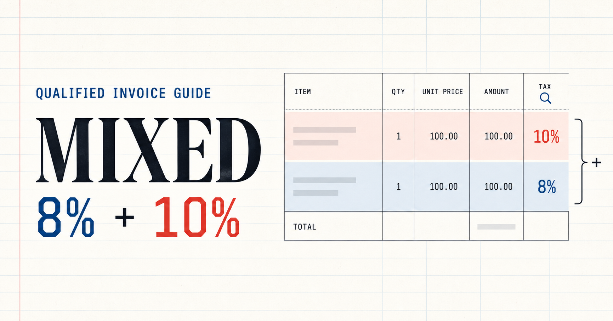
インボイス制度で8%軽減税率と10%標準税率が混在する請求書の計算方法を、実際に数字を入れて試せる計算機で解説。税率ごとに区分した対価の額と消費税額の求め方を、その場で検証できます。
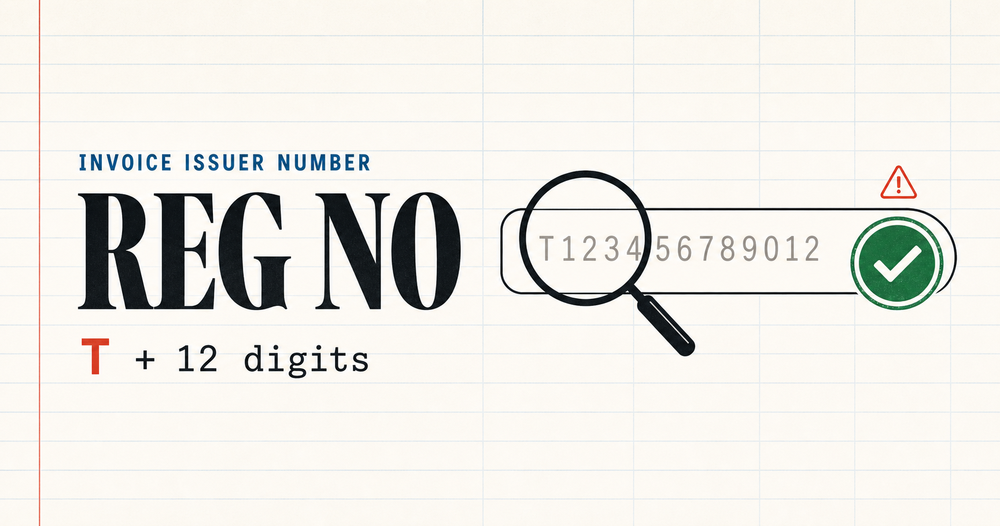
適格請求書発行事業者の登録番号（T+13桁）の正しい形式と、請求書のどこに書くかを解説。番号を入力すると1桁ずつ形式を検証するバリデータと、国税庁公表サイトへの導線付き。
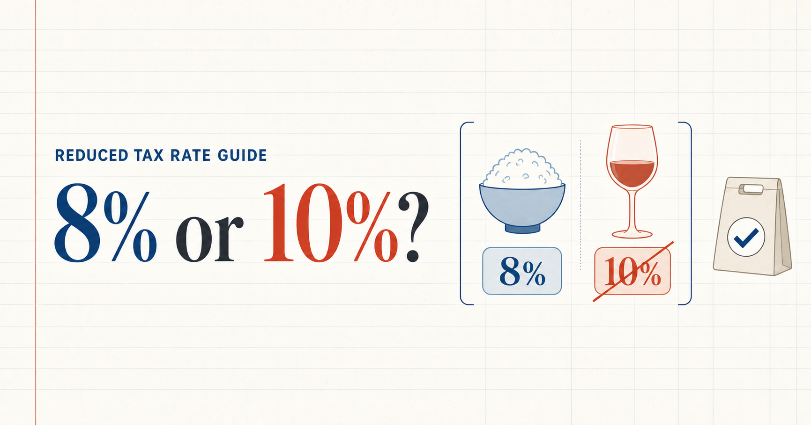
飲食料品・定期購読の新聞に適用される軽減税率8%。酒類・外食という2つの例外を、カテゴリと条件トグルで判定するチェッカーで解説。テイクアウトと店内の違いもその場で確認。
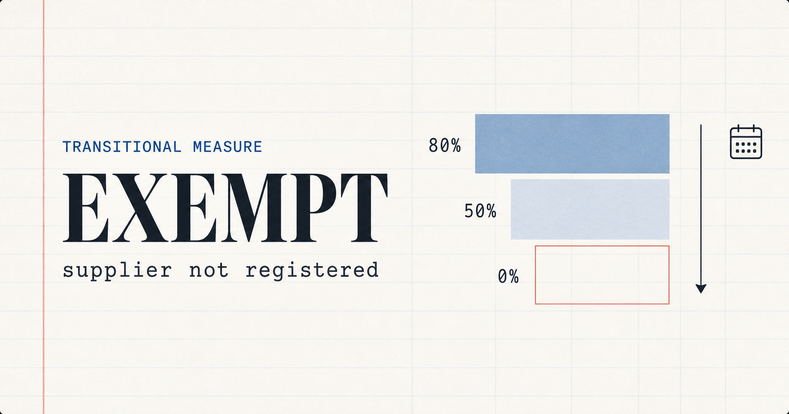
インボイス登録していない免税事業者からの仕入。仕入税額控除は経過措置で80%→70%→50%→30%→0%と縮小します。取引日と支払額を入れると、控除できる額と実質コストになる額をその場で計算。
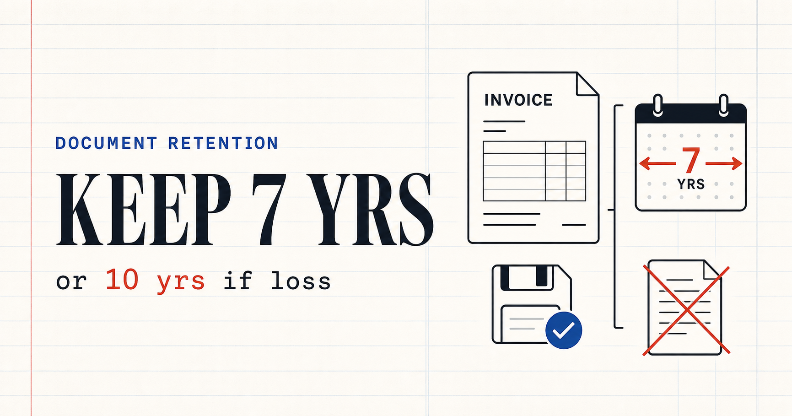
請求書・領収書の保存期間（原則7年、欠損金・損失繰越がある年は10年）を判定するチェッカーと、電子データで受け取った請求書を紙に印刷してよいかを判定する電子取引要件チェックを1ページに。
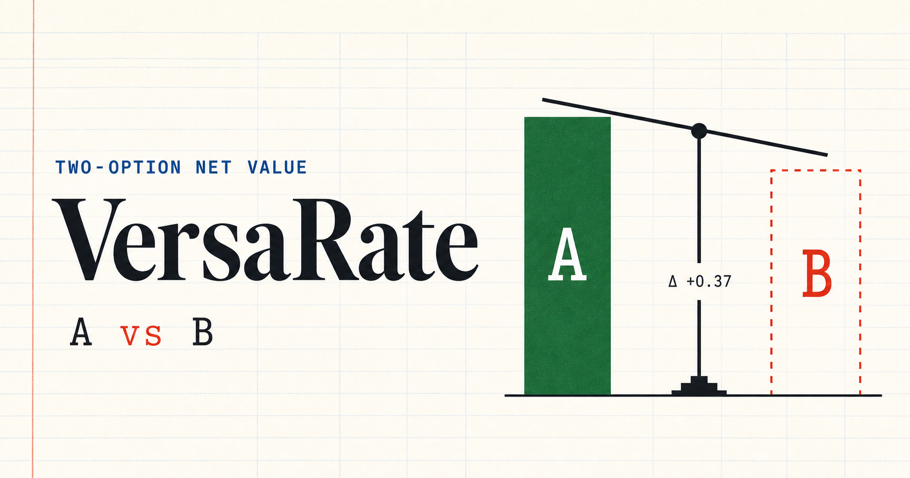
2つの案件・働き方を、手数料・工数・源泉を引いた実質時給と年間手残りで並べて比較。時給で切るか年間総額で切るかで結論が割れるケースをあえて見せ、どちらを見送るかの判断を数字で支えます。
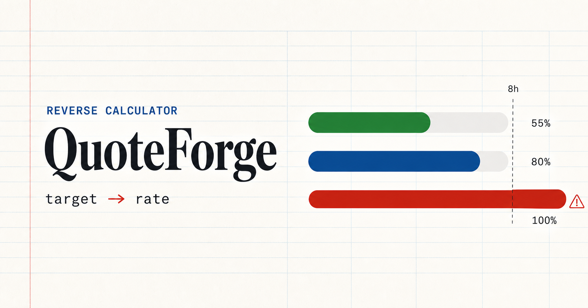
欲しい手取り月収から、必要な案件単価・月本数・1日の稼働時間を逆算。目標を上げるほど1日稼働のゲージが赤ゾーンにはみ出し、「物理的に無理」を数字で見せます。
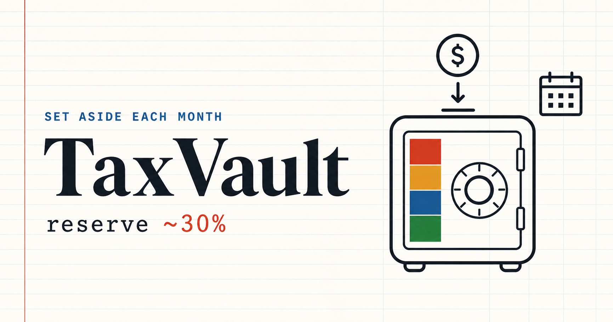
月額売上から所得税・住民税・事業税・消費税の退避目安を積み上げて算出。今月別口座へ避けておくべき額と年間換算を可視化。入金された瞬間に分ける仕組みづくりを支援。
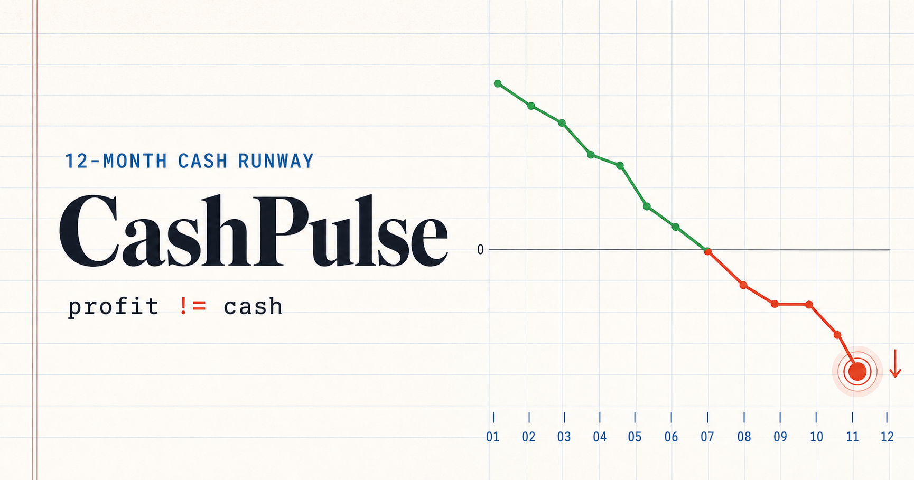
月次の入金・出費から手元現金の推移を折れ線で可視化。支払サイトをずらすと入金が遅れ、黒字でも現金が枯れる月が点滅警告。利益と現金のズレを目で見る。
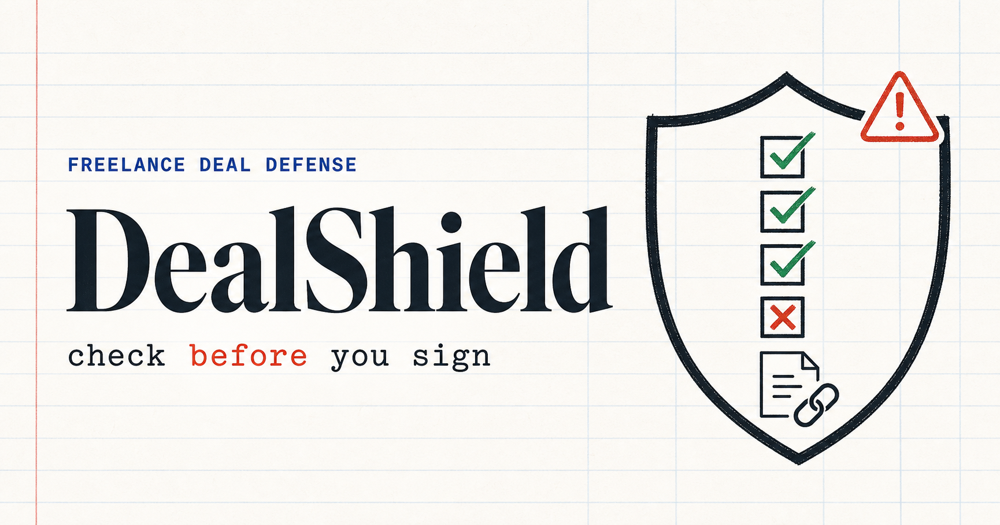
フリーランス新法に基づき、発注条件が明示義務8項目・支払期日・無償修正禁止の観点で守られているかを、各項目に公的条文リンクを添えてチェック。不当な要求には根拠付きの断り文を生成。あなたの責任なら誠実な対応文を出します。
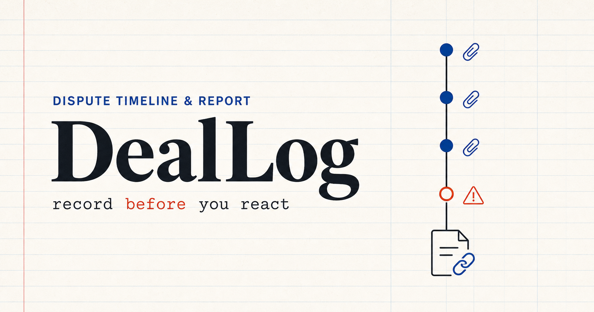
取引トラブルを時系列で記録し、各記録に条文ヒントを付与。110番・弁護士相談用の報告書や、未払い時の督促メール・内容証明の下書きをその場で生成。データはブラウザ内のみ、登録不要。
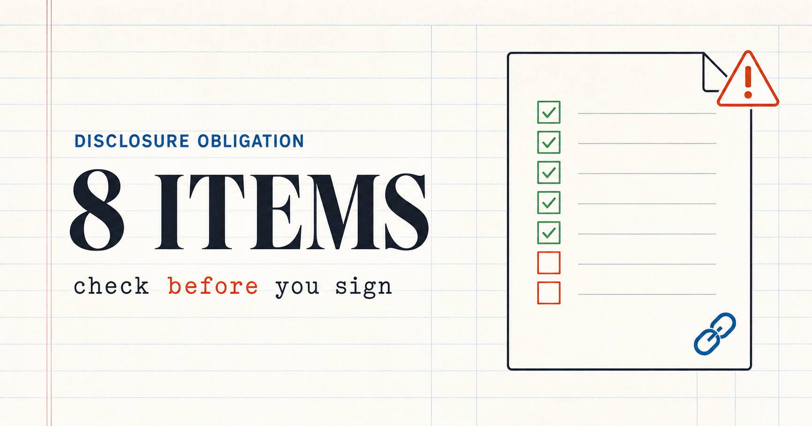
フリーランス新法で発注者に義務づけられる取引条件の明示8項目を、出典条文付きで解説。発注書・契約書に揃っているかをその場で確認できるチェックリスト付き。DealShield（主軸）への入口。